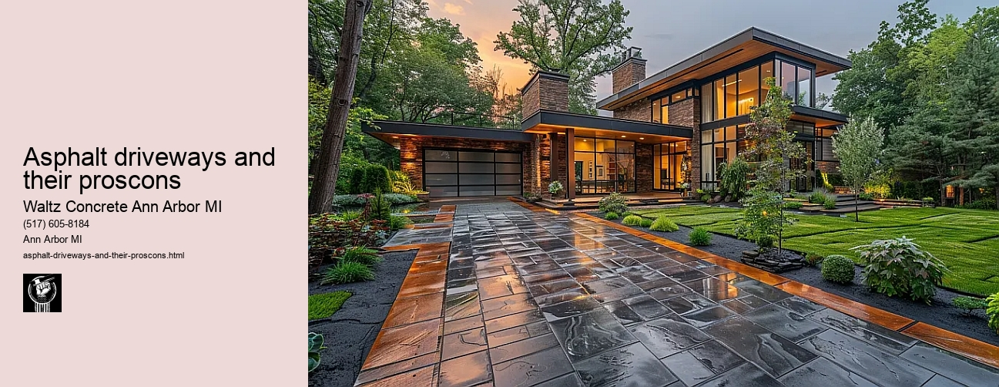

News
Concrete Driveway Installation Ann Arbor Mi
Concrete Driveway Installation Ann Arbor Mi
Choosing the right contractor for installation
Cost of concrete driveway installation in Ann Arbor
Permit requirements for driveway installation in Ann Arbor
The process and timeline of concrete driveway installation
Different types of concrete used in driveways
Maintenance and Repair of Concrete Driveways in Ann Arbor Mi
Maintenance and Repair of Concrete Driveways in Ann Arbor Mi
Preventive maintenance tips for durability
Common causes for concrete driveway damage
Professional companies offering repair services in Ann Arbor
Doityourself versus professional repairs
Costs associated with repairing a concrete driveway
Designs and Styles of Concrete Driveways in Ann Arbor Mi
Designs and Styles of Concrete Driveways in Ann Arbor Mi
Popular design trends for driveways
Considering climate factors when choosing a design or style
Unique customizations available for concrete driveways
Influence of home architecture on driveway design
Stamped stained and decorative options
Environmental Impact of Concrete Driveways in Ann Arbor Mi
Environmental Impact of Concrete Driveways in Ann Arbor Mi
Carbon footprint associated with concrete production
Use of sustainable materials in concrete driveways
Drainage considerations to reduce environmental impact
Local regulations regarding environmentally friendly driveways
Potential use of permeable or porous pavement
Alternatives to Concrete Driveways in Ann Arbor Mi
Alternatives to Concrete Driveways in Ann Arbor Mi
Asphalt driveways and their proscons
Paver stone driveways and their benefitsdrawbacks
Gravel or crushed stone as an alternative option
Comparing costs between different driveway materials
Resinbound surfaces as emerging technology
About Us
Contact Us

Asphalt driveways and their proscons
Asphalt driveways and their proscons
Title: Asphalt Driveways: A Comprehensive Analysis of Pros and Cons
Asphalt driveways have become a popular choice for homeowners due to their durability, cost-effectiveness, and aesthetic appeal. However, like any other building material, asphalt also has its own set of advantages and disadvantages.
Starting with the positives, one major advantage of asphalt driveways is their cost-effectiveness. Compared to concrete or brick driveways, asphalt is relatively cheaper to install. This makes it a good option for homeowners working on a tight budget. Aside from installation costs, maintenance expenses are also lower since small cracks can be repaired easily without needing professional help.
Another great benefit of asphalt driveways is their quick installation process. Depending on the size of the driveway and the efficiency of your contractor's team, an asphalt driveway can be installed within 1-2 days. Moreover, you don't need to wait long after installation before you can use the driveway; with asphalt, it usually takes about 48 hours for it to cure completely.
Asphalt driveways' resilience during different weather conditions is another selling point. During winter months when temperatures dip below freezing point, concrete can crack due to freeze-thaw cycles while asphalt remains flexible allowing it to withstand such conditions better.
Moreover, blacktops (as they are often called because of their dark color) absorb heat more effectively which helps in melting snow faster during winter months - a handy feature if you live in colder regions or if shoveling isnt your favorite pastime.
Despite these benefits though, there are some drawbacks that come with installing an asphalt driveway. The first disadvantage lies in its aesthetics; while some people appreciate its classic black finish others find it plain compared to decorative options like stamped or colored concrete.
Also, while minor repairs might be easy and cheap with an asphalt driveway larger damages could require complete resealing which may end up being expensive in the long run.
Furthermore, despite being resilient in colder climates, asphalt doesn't fare well in extremely hot conditions. In areas where temperatures regularly soar high, asphalt driveways can soften and become prone to damage from heavy vehicles.
Finally, environmental concerns also come into play. Asphalt production involves the use of fossil fuels which contribute to greenhouse gas emissions. Also, since it is a petroleum product spills or leaks from cars parked on it can seep through and contaminate the ground water below.
In conclusion, while asphalt driveways offer numerous benefits such as cost-effectiveness, quick installation time, and resilience during cold weather; they also have their own set of drawbacks including limited aesthetics appeal, susceptibility to heat damage and potential environmental harm. Therefore, when choosing between different driveway materials it's important for homeowners to weigh these pros and cons against their specific needs and circumstances.
Alternatives to Concrete Driveways in Ann Arbor Mi
Asphalt driveways and their proscons
Frequently Asked Questions
What are the advantages of asphalt driveways?
Asphalt driveways are cost-effective, easy and quick to install. They can also handle fluctuations in temperature well, providing a flexible surface that resists cracking.
What are the disadvantages of asphalt driveways?
Asphalt driveways require regular maintenance such as sealcoating every few years. They can also soften in extreme heat and may not last as long as concrete driveways.
How does an asphalt driveway compare to a concrete driveway?
While asphalt is cheaper and faster to install than concrete, it requires more frequent maintenance. Concrete on the other hand is more durable and lasts longer, but its more expensive upfront and takes longer to cure.
Are asphalt driveways suitable for all climates?
Asphalt works well in both hot and cold temperatures, but extreme heat can cause it to become soft and pliable which could lead to damage.
Can existing concrete driveways in Ann Arbor Mi be overlaid with asphalt?
Yes, its possible to overlay a concrete driveway with asphalt. However, due consideration must be given to the condition of the existing concrete base, potential drainage issues and height adjustments around structures like garage doors or sidewalks.
Asphalt driveways and their proscons